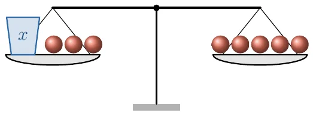
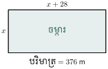
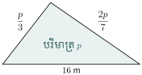

វត្ថុបំណង
- បកស្រាយចំណោទ ដើម្បីបង្ហាញសញ្ញាណសមីការដឺក្រេទី 1 មានមួយអញ្ញាត
- ដោះស្រាយសមីការដឺក្រេទី 1 មានមួយអញ្ញាត ឬរកឫសនៃសមីការ
- ដោះស្រាយចំណោទសមីការដឺក្រេទី 1 មានមួយអញ្ញាត ។
1. សញ្ញាណសមីការដឺក្រេទី 1 មានមួយអញ្ញាតទំព័រ ៩៣
ឧទាហរណ៍ 1 ៖ ឧបមាថា នៅក្នុងស្រុកមួយមានសាលាបឋមសិក្សាចំនួន 5 នៅឆ្នាំ 2005 លុះមកដល់ឆ្នាំ 2008 ចំនួនសាលាបឋមសិក្សាកើនដល់ 8 សាលា ។ គេចង់ដឹងថា តើចំនួនសាលាដែលបានសាងសង់នៅចន្លោះឆ្នាំ 2005 និងឆ្នាំ 2008 មានចំនួនប៉ុន្មាន?
បើគេតាងអក្សរ \(\displaystyle x\) ជាចំនួនសាលាបឋមសិក្សាដែលគេបានសាងសង់នៅចន្លោះឆ្នាំ 2005 និងឆ្នាំ 2008 នោះគេបានកន្សោមពីជគណិត \(\displaystyle 5 + x = 8\) ។
កន្សោមនេះហៅថា សមីការដឺក្រេទី 1 មានមួយអញ្ញាត (\(\displaystyle x\) ជាអញ្ញាត) ។
ឧទាហរណ៍ 2 ៖ \(\displaystyle x + 3 = 5\) ជាសមីការដឺក្រេទី 1 មានមួយអញ្ញាតដែលមាន \(\displaystyle x\) ជាអញ្ញាត ។

▶ មើលរូបមានចលនា៖ ជញ្ជីងសមីការ (ដកឬថែមលើអង្គទាំងពីរ)
កន្សោមពីជគណិតមានទម្រង់ \(\displaystyle ax + b = c\) ដែល \(\displaystyle a, b\) និង \(\displaystyle c\) ជាចំនួនថេរហើយ \(\displaystyle a \neq 0\) ហៅថា សមីការដឺក្រេទី 1 មានមួយអញ្ញាត \(\displaystyle x\) ។
✎ ពិនិត្យខ្លួនឯង៖ សញ្ញាណសមីការ (៣ សំណួរ)
សាកល្បងដោះស្រាយដោយខ្លួនឯង រួចចុច «ពិនិត្យ» ដើម្បីដឹងចម្លើយ និងមើលដំណោះស្រាយ។
2. ឫសនៃសមីការដឺក្រេទី 1 មានមួយអញ្ញាតទំព័រ ៩៤
គេមានសមីការ \(\displaystyle x + 4 = 7\) ។ តើមានតម្លៃលេខនៃ \(\displaystyle x\) ណាដែលនាំឱ្យអង្គទាំងពីរនៃសមីការមានតម្លៃលេខស្មើគ្នា?
បើ \(\displaystyle x = 0\) គេបាន \(\displaystyle 0 + 4 < 7\)
បើ \(\displaystyle x = 1\) គេបាន \(\displaystyle 1 + 4 < 7\)
បើ \(\displaystyle x = 2\) គេបាន \(\displaystyle 2 + 4 < 7\)
បើ \(\displaystyle x = 3\) គេបាន \(\displaystyle 3 + 4 = 7\)
បើ \(\displaystyle x = 4\) គេបាន \(\displaystyle 4 + 4 > 7\) ។
\(\displaystyle x = 3\) ធ្វើឱ្យអង្គទាំងពីរនៃសមីការមានតម្លៃលេខស្មើគ្នា ។ គេថា \(\displaystyle x = 3\) ជាឫស ឬជាចម្លើយនៃសមីការ \(\displaystyle x + 4 = 7\) ។
លំហាត់គំរូ 1 ៖ ក្នុងចំណោមលេខ 12, 10 និង 8 តើតម្លៃលេខណាមួយជាចម្លើយនៃសមីការ \(\displaystyle 86 + x = 94\) ។
ដំណោះស្រាយ
ផ្ទៀងផ្ទាត់បើ \(\displaystyle x = 12\) គេបាន \(\displaystyle 86 + 12 = 94\) (ជំនួស \(\displaystyle x\) ដោយ 12)
\(\displaystyle 98 = 94\) មិនពិត
ដូច្នេះ \(\displaystyle x = 12\) មិនមែនជាឫសនៃសមីការ \(\displaystyle 86 + x = 94\) ។
ផ្ទៀងផ្ទាត់បើ \(\displaystyle x = 10\) គេបាន \(\displaystyle 86 + 10 = 94\) (ជំនួស \(\displaystyle x\) ដោយ 10)
\(\displaystyle 96 = 94\) មិនពិត
ដូច្នេះ \(\displaystyle x = 10\) មិនមែនជាឫសនៃសមីការ \(\displaystyle 86 + x = 94\) ។
ផ្ទៀងផ្ទាត់បើ \(\displaystyle x = 8\) គេបាន \(\displaystyle 86 + 8 = 94\) (ជំនួស \(\displaystyle x\) ដោយ 8)
\(\displaystyle 94 = 94\) ពិត
ដូច្នេះ \(\displaystyle x = 8\) ជាឫសនៃសមីការ \(\displaystyle 86 + x = 94\) ។
ក. គេមានតម្លៃ \(\displaystyle x\) ស្មើនឹង 52, 42 និង 24 ។ តើតម្លៃ \(\displaystyle x\) ណាដែលជាឫសនៃសមីការ \(\displaystyle x - 14 = 38\) ។
ខ. រកឫសនៃសមីការ \(\displaystyle 5x = 100\) ។
មើលចម្លើយ
ក. 52 (ព្រោះ \(\displaystyle 52 - 14 = 38\) ពិត) ខ. \(\displaystyle x = 20\) (ព្រោះ \(\displaystyle 5(20) = 100\) ពិត) ។
លំហាត់គំរូ 2 ៖ តើត្រូវថែមចំនួនប៉ុន្មានលើចំនួន 198 ដើម្បីឱ្យបាន 205 ?
ដំណោះស្រាយ
តាងអក្សរ \(\displaystyle x\) ជាចំនួនដែលត្រូវថែម គេបាន ៖
ដូច្នេះត្រូវថែម 7 លើចំនួន 198 ដើម្បីឱ្យបាន 205 ។
ក. ដោះស្រាយសមីការ \(\displaystyle x + 10 = 21\) រួចផ្ទៀងផ្ទាត់ចម្លើយ ។
ខ. ដោះស្រាយសមីការ \(\displaystyle 12 - (x - 3) = 8\) រួចផ្ទៀងផ្ទាត់ចម្លើយ ។
មើលចម្លើយ
ក. \(\displaystyle x = 21 - 10 = 11\) (ផ្ទៀងផ្ទាត់ ៖ \(\displaystyle 11 + 10 = 21\) ពិត)
ខ. \(\displaystyle 12 - x + 3 = 8 \iff 15 - x = 8 \implies x = 7\) (ផ្ទៀងផ្ទាត់ ៖ \(\displaystyle 12 - (7 - 3) = 12 - 4 = 8\) ពិត)
✎ ពិនិត្យខ្លួនឯង៖ ឫសនៃសមីការ (៤ សំណួរ)
សាកល្បងដោះស្រាយដោយខ្លួនឯង រួចចុច «ពិនិត្យ» ដើម្បីដឹងចម្លើយ និងមើលដំណោះស្រាយ។
3. ការដោះស្រាយសមីការដឺក្រេទី 1 មានមួយអញ្ញាតទំព័រ ៩៥
3.1. ការដោះស្រាយសមីការដោយប្រើវិធីបូកឬដកទំព័រ ៩៥
ឧទាហរណ៍ 1 ៖ គេមានសមភាព \(\displaystyle 5 = 5\) បើគេថែម 2 លើអង្គទាំងពីរ គេបាន \(\displaystyle 5 + 2 = 5 + 2\) ឬ \(\displaystyle 7 = 7\) ។
ឧទាហរណ៍ 2 ៖ គេមានសមភាព \(\displaystyle 5 = 5\) បើគេដក 2 ពីអង្គទាំងពីរ គេបាន \(\displaystyle 5 - 2 = 5 - 2\) ឬ \(\displaystyle 3 = 3\) ។
- បើគេថែម ឬដកចំនួនដូចគ្នាពីអង្គទាំងពីរនៃសមភាព ឬសមីការ នោះអង្គទាំងពីរនៃសមភាព ឬសមីការនៅតែស្មើគ្នាដដែល ។
- គេមាន \(\displaystyle a, b\) និង \(\displaystyle c\) ជាចំនួនថេរ បើ \(\displaystyle a = b\) នោះ \(\displaystyle a \pm c = b \pm c\) ។
គេអាចប្រើលក្ខណៈវិធីបូកឬដកនៃសមភាពឬសមីការខាងលើ ដើម្បីដោះស្រាយសមីការដឺក្រេទី 1 មានមួយអញ្ញាត ។
លំហាត់គំរូ ៖ ដោះស្រាយសមីការ \(\displaystyle 8 - (x + 2) = 4\) ។
ដំណោះស្រាយ
ដូច្នេះ \(\displaystyle x = 2\) ។
ឬ ៖
3.2. ការដោះស្រាយសមីការដោយប្រើវិធីចែកឬគុណទំព័រ ៩៥–៩៦
ឧទាហរណ៍ ៖ ដោះស្រាយសមីការ \(\displaystyle \frac{x}{4} = 9\) ។
គេបាន \(\displaystyle \frac{x}{4} \times 4 = 9 \times 4\) (គុណអង្គទាំងពីរនឹង 4) នាំឱ្យ \(\displaystyle x = 36\) ។
ផ្ទៀងផ្ទាត់ ៖ \(\displaystyle \frac{36}{4} = 9\) (ពិត)
ដូច្នេះ \(\displaystyle x = 36\) ជាឫសនៃសមីការ \(\displaystyle \frac{x}{4} = 9\) ។
គេអាចដោះស្រាយសមីការ តាមវិធីគុណ ឬចែកអង្គទាំងពីរនឹងមួយចំនួនដូចគ្នាខុសពីសូន្យ ។
លំហាត់គំរូ 1 ៖ ដោះស្រាយសមីការ \(\displaystyle \frac{t}{1.4} = 28\) ។
ដំណោះស្រាយ
ដូច្នេះ \(\displaystyle t = 39.2\) ជាឫសនៃសមីការ ។
លំហាត់គំរូ 2 ៖ ខ្មៅដៃ 3 ដើមថ្លៃ 2100 រៀល ។ រកតម្លៃខ្មៅដៃមួយដើម ។
ដំណោះស្រាយ
តាង \(\displaystyle x\) ជាតម្លៃខ្មៅដៃមួយដើម គេបាន ៖
ដូច្នេះតម្លៃខ្មៅដៃមួយដើមស្មើនឹង \(\displaystyle 700~\text{រៀល}\) ។
ក. ដោះស្រាយសមីការ \(\displaystyle 7.2 = 3x\) រួចផ្ទៀងផ្ទាត់ចម្លើយ ។
ខ. ដោះស្រាយសមីការ \(\displaystyle 13 = \frac{t}{1.2}\) រួចផ្ទៀងផ្ទាត់ចម្លើយ ។
មើលចម្លើយ
ក. \(\displaystyle x = \frac{7.2}{3} = 2.4\) (ផ្ទៀងផ្ទាត់ ៖ \(\displaystyle 3 \times 2.4 = 7.2\) ពិត)
ខ. \(\displaystyle t = 13 \times 1.2 = 15.6\) (ផ្ទៀងផ្ទាត់ ៖ \(\displaystyle \frac{15.6}{1.2} = 13\) ពិត)
3.3. ការដោះស្រាយសមីការដោយប្រើវិធីចម្រុះទំព័រ ៩៦–៩៧
ឧទាហរណ៍ ៖ ដោះស្រាយសមីការ \(\displaystyle 2x - 50 = 10\) ។
\(\displaystyle 2x - 50 = 10 \implies 2x = 10 + 50\) (លើកតួពីអង្គម្ខាងទៅអង្គម្ខាងទៀតដោយប្ដូរសញ្ញា)
\(\displaystyle 2x = 60 \implies x = \frac{60}{2} = 30\)
ដូច្នេះ \(\displaystyle x = 30\) ជាឫសនៃសមីការ \(\displaystyle 2x - 50 = 10\) ។
លំហាត់គំរូ 1 ៖ ដោះស្រាយសមីការ \(\displaystyle 3(x - 2) = 5(x - 6)\) ។
ដំណោះស្រាយ
ដូច្នេះ \(\displaystyle x = 12\) ជាឫសនៃសមីការ ។
លំហាត់គំរូ 2 ៖ គណនាចំនួនគត់គូ 4 តបន្តគ្នាដែលផលបូកបីតួដំបូងលើសតួទី 4 ចំនួន 8 ។
ដំណោះស្រាយ
តាង \(\displaystyle x\) ជាចំនួនគត់គូតួដំបូង ។
គេបានចំនួនគត់គូ 4 តបន្តគ្នាគឺ \(\displaystyle x\), \(\displaystyle x + 2\), \(\displaystyle x + 4\) និង \(\displaystyle x + 6\) ។
ផលបូកបីតួដំបូងលើសតួទី 4 ចំនួន 8 អាចសរសេរជាសមីការ ៖
ផ្ទៀងផ្ទាត់ ៖ \(\displaystyle 4 + 6 + 8 = 18\) ជាផលបូកបីតួដំបូង ហើយ \(\displaystyle 18 - 8 = 10\) ជាតួទី 4 (ពិត) ។
ដូច្នេះចំនួនគត់គូ 4 តបន្តគ្នាគឺ 4, 6, 8 និង 10 ។
ក. ដោះស្រាយសមីការ \(\displaystyle 5x - (7x - 4) - 2 = 5 - (3x + 2)\)
ខ. ដោះស្រាយសមីការ \(\displaystyle 5 - \frac{2x - 1}{4} = \frac{x + 2}{3}\)
មើលចម្លើយ
ក. \(\displaystyle 5x - 7x + 4 - 2 = 5 - 3x - 2 \iff -2x + 2 = 3 - 3x \implies x = 1\)
ខ. គុណនឹង 12 ៖ \(\displaystyle 60 - 3(2x - 1) = 4(x + 2) \iff 60 - 6x + 3 = 4x + 8 \iff 63 - 6x = 4x + 8 \iff 10x = 55 \implies x = \frac{55}{10} = \frac{11}{2}\)
3.4. ចំណោទសមីការដឺក្រេទី 1 មានមួយអញ្ញាតទំព័រ ៩៧–៩៨
ឧទាហរណ៍ ៖ រកមួយចំនួនដែលបីដងនៃចំនួននោះស្មើនឹង 93 ។
1. សិក្សាប្រធាន ៖ សម្មតិកម្មគេប្រាប់ បីដងនៃចំនួនមួយស្មើនឹង 93 សំណួរគេសួរ រកចំនួននោះ
2. ជ្រើសរើសអញ្ញាត ៖ តាងចំនួននោះដោយអក្សរ \(\displaystyle x\)
3. សរសេរសមីការ ៖ គេបាន \(\displaystyle 3x = 93\)
4. ដោះស្រាយសមីការ ៖ \(\displaystyle 3x = 93 \implies x = \frac{93}{3} = 31\)
5. ផ្ទៀងផ្ទាត់ចម្លើយ ៖ \(\displaystyle 3 \times 31 = 93\) ពិត ។ ដូច្នេះចំនួននោះស្មើនឹង 31 ។
ដើម្បីដោះស្រាយចំណោទសមីការដឺក្រេទី 1 មានមួយអញ្ញាត គេត្រូវ ៖
- សិក្សាប្រធាន (គេប្រាប់អ្វី? គេសួររកអ្វី?)
- ជ្រើសរើសអញ្ញាត
- សរសេរសមីការ
- ដោះស្រាយសមីការ
- ផ្ទៀងផ្ទាត់ចម្លើយ ។
លំហាត់គំរូ ៖ ក្នុងត្រីកោណមួយគេដឹងថា ជ្រុងទី 1 ស្មើនឹង \(\displaystyle \frac{1}{3}\) នៃបរិមាត្រ ជ្រុងទី 2 ស្មើនឹង \(\displaystyle 7~\text{m}\) និងជ្រុងទី 3 ស្មើនឹង \(\displaystyle \frac{1}{5}\) នៃបរិមាត្រ ។ គណនាបរិមាត្រនៃត្រីកោណនោះ ។
ដំណោះស្រាយ
- សិក្សាប្រធាន ៖ ជ្រុងទី 1 ស្មើនឹង \(\displaystyle \frac{1}{3}\) នៃបរិមាត្រ ជ្រុងទី 2 ស្មើនឹង \(\displaystyle 7~\text{m}\) និងជ្រុងទី 3 ស្មើនឹង \(\displaystyle \frac{1}{5}\) នៃបរិមាត្រ ។ គេសួររកបរិមាត្រនៃត្រីកោណ ។
- ជ្រើសរើសអញ្ញាត ៖ តាង \(\displaystyle p\) ជាបរិមាត្រនៃត្រីកោណ ។
- សរសេរសមីការ ៖ គេបាន \(\displaystyle p = \frac{p}{3} + \frac{p}{5} + 7\) ។
ដោះស្រាយសមីការ ៖
\[\begin{aligned} p &= \frac{p}{3} + \frac{p}{5} + 7 \\ 15p &= 5p + 3p + 105 \\ 15p - 8p &= 105 \\ 7p &= 105 \implies p = \frac{105}{7} = 15~\text{m} \end{aligned}\]- ផ្ទៀងផ្ទាត់ចម្លើយ ៖
ជ្រុងទី 1 គឺ \(\displaystyle \frac{p}{3} = \frac{15}{3} = 5~\text{m}\), ជ្រុងទី 3 គឺ \(\displaystyle \frac{p}{5} = \frac{15}{5} = 3~\text{m}\) និងជ្រុងទី 2 ស្មើនឹង \(\displaystyle 7~\text{m}\)
បរិមាត្រត្រីកោណ \(\displaystyle p = 5~\text{m} + 3~\text{m} + 7~\text{m} = 15~\text{m}\)
ដូច្នេះបរិមាត្រត្រីកោណស្មើនឹង \(\displaystyle 15~\text{m}\) ។
ក. ចម្ការមួយរាងចតុកោណកែង មានបរិមាត្រស្មើនឹង \(\displaystyle 376~\text{m}\) ។ គណនាប្រវែងទទឹងនិងបណ្តោយ បើគេដឹងថាបណ្តោយមានប្រវែង \(\displaystyle 28~\text{m}\) លើសទទឹង ។
ខ. រកចំនួនគត់សេស 3 តបន្តគ្នា ដែល 3 ដងនៃផលបូកចំនួនទាំងនោះលើស 8 ដងនៃតួកណ្តាលចំនួន 5 ។

មើលចម្លើយ
ក. តាងទទឹងដោយ \(\displaystyle x\) នោះបណ្តោយគឺ \(\displaystyle x + 28\) ។ បរិមាត្រ \(\displaystyle 2(x + x + 28) = 376 \iff 2(2x + 28) = 376 \iff 4x + 56 = 376 \iff 4x = 320 \implies x = 80~\text{m}\) ។
បណ្តោយគឺ \(\displaystyle 80 + 28 = 108~\text{m}\) ។
ដូចនេះ ទទឹងស្មើនឹង \(\displaystyle 80~\text{m}\) និងបណ្តោយស្មើនឹង \(\displaystyle 108~\text{m}\) ។
ខ. តាងចំនួនគត់សេសទាំងបីដោយ \(\displaystyle x - 2, x, x + 2\) ដែល \(\displaystyle x\) ជាតួកណ្តាល ។
ផលបូកគឺ \(\displaystyle (x - 2) + x + (x + 2) = 3x\) ។
តាមលក្ខខណ្ឌ ៖ \(\displaystyle 3(3x) - 8x = 5 \iff 9x - 8x = 5 \implies x = 5\) ។
ដូចនេះ ចំនួនទាំងបីនោះគឺ 3, 5, 7 ។
3.5. ការតាមដាននិងការប៉ាន់ស្មានការចំណាយទំព័រ ៩៨–៩៩
ការតាមដានការចំណាយ អាចឱ្យអ្នកដឹងថាតើអ្នកចាយលើអ្វីខ្លះ ដែលអាចជួយអ្នកក្នុងការគ្រប់គ្រងថវិកានិងការព្យាករសម្រាប់ពេលអនាគត ។
លំហាត់គំរូ ៖ បុប្ផាចំណាយលើម្ហូបអាហារក្នុងរយៈពេល 4 សប្តាហ៍សរុបអស់ \(\displaystyle 400~000~\text{៛}\) ។ តាមរយៈកំណត់ត្រាគេដឹងថា 3 សប្តាហ៍ដំបូង គាត់ចំណាយ \(\displaystyle 100~000~\text{៛}\) ស្មើៗគ្នា ។ គណនាចំណាយក្នុងសប្តាហ៍ទី 4 ។ តើអ្នកអាចប៉ាន់ស្មានការចំណាយរបស់បុប្ផាក្នុងរយៈពេល 4 សប្តាហ៍ខាងមុខបានដែរឬទេ? ហេតុអ្វី?
ដំណោះស្រាយ
តាង \(\displaystyle x\) ជាប្រាក់ចំណាយសប្តាហ៍ទី 4 គេបានសមីការ ៖
ដូច្នេះប្រាក់ចំណាយរបស់បុប្ផាក្នុងសប្តាហ៍ទី 4 គឺ \(\displaystyle 100~000~\text{៛}\) ។
ផ្អែកលើការតាមដានការចំណាយរបស់បុប្ផាក្នុងរយៈពេល 4 សប្តាហ៍ យើងអាចប៉ាន់ស្មានប្រាក់ចំណាយរបស់គាត់សម្រាប់រយៈពេល 4 សប្តាហ៍ខាងមុខដែលនៅក្នុងរង្វង់ទឹកប្រាក់ \(\displaystyle 400~000~\text{៛}\) ។ ការតាមដាននេះអាចជួយឱ្យយើងធ្វើផែនការថវិកាសម្រាប់ពេលខាងមុខបានល្អប្រសើរ ។
ក្នុងរយៈពេល 4 សប្តាហ៍ ចរិយាចំណាយប្រាក់សរុប \(\displaystyle 500~000~\text{៛}\) ។ តាមរយៈកំណត់ត្រាគាត់ចំណាយអស់ \(\displaystyle 50~000~\text{៛}\) ក្នុងសប្តាហ៍ទី 1 ហើយ \(\displaystyle 100~000~\text{៛}\) ក្នុងសប្តាហ៍ទី 3 និង \(\displaystyle 200~000~\text{៛}\) ក្នុងសប្តាហ៍ទី 4 ។ រកប្រាក់ចំណាយក្នុងសប្តាហ៍ទី 2 ។ តើចរិយាអាចប៉ាន់ស្មានការចំណាយសម្រាប់រយៈពេល 4 សប្តាហ៍បន្ទាប់បានដែរឬទេ?
មើលចម្លើយ
\(\displaystyle 50~000 + x + 100~000 + 200~000 = 500~000 \implies 350~000 + x = 500~000 \implies x = 150~000~\text{៛}\) ។
នារីចំណាយប្រាក់ \(\displaystyle 100~000~\text{៛}\) ដើម្បីទិញសម្ភារៈសិក្សាដោយដឹងថាប្រាក់ \(\displaystyle 40~000~\text{៛}\) ត្រូវបានចំណាយលើឯកសណ្ឋាន ហើយ \(\displaystyle 20~000~\text{៛}\) លើសៀវភៅនិងប៊ិក ចំណែកប្រាក់ដែលនៅសល់ត្រូវបានចំណាយលើកាបូបរៀន ។ គណនាប្រាក់ចំណាយលើកាបូបរៀន ។ តើនារីត្រូវការប្រាក់ប្រហែលប៉ុន្មានសម្រាប់ទិញសម្ភារៈសិក្សានៅឆ្នាំខាងមុខ?
មើលចម្លើយ
\(\displaystyle 40~000 + 20~000 + x = 100~000 \implies 60~000 + x = 100~000 \implies x = 40~000~\text{៛}\) ។
✎ ពិនិត្យខ្លួនឯង៖ ការដោះស្រាយសមីការ (៦ សំណួរ)
សាកល្បងដោះស្រាយដោយខ្លួនឯង រួចចុច «ពិនិត្យ» ដើម្បីដឹងចម្លើយ និងមើលដំណោះស្រាយ។
លំហាត់ទំព័រ ១០០
គេមានសមីការ \(\displaystyle 2x + 3 = 1\), \(\displaystyle 5 - (x - 2) = 8\), \(\displaystyle x^2 + 4x - 1 = 0\) និង \(\displaystyle x(x - 5) - 3 = 1\) ។
តើសមីការណាខ្លះជាសមីការដឺក្រេទី 1 មានមួយអញ្ញាត ។មើលដំណោះស្រាយ
- \(\displaystyle 2x + 3 = 1\) មានអញ្ញាត \(\displaystyle x\) ដឺក្រេទី 1 ដូចនេះជាសមីការដឺក្រេទី 1 មានមួយអញ្ញាត ។
- \(\displaystyle 5 - (x - 2) = 8 \iff -x + 7 = 8\) មានអញ្ញាត \(\displaystyle x\) ដឺក្រេទី 1 ដូចនេះជាសមីការដឺក្រេទី 1 មានមួយអញ្ញាត ។
- \(\displaystyle x^2 + 4x - 1 = 0\) មានតួ \(\displaystyle x^2\) ជាដឺក្រេទី 2 ដូចនេះមិនមែនជាសមីការដឺក្រេទី 1 ទេ ។
- \(\displaystyle x(x - 5) - 3 = 1 \iff x^2 - 5x - 4 = 0\) មានតួ \(\displaystyle x^2\) ជាដឺក្រេទី 2 ដូចនេះមិនមែនជាសមីការដឺក្រេទី 1 ទេ ។
ដូចនេះ សមីការដឺក្រេទី 1 មានមួយអញ្ញាតគឺ ៖ \(\displaystyle 2x + 3 = 1\) និង \(\displaystyle 5 - (x - 2) = 8\) ។
ដោះស្រាយសមីការខាងក្រោម រួចផ្ទៀងផ្ទាត់ចម្លើយ ៖
- ក. \(\displaystyle 15 + x = 21\)
- ខ. \(\displaystyle 40 + n = 70\)
- គ. \(\displaystyle m + 1.2 = 1.5\)
- ឃ. \(\displaystyle y - 14 = 19\)
- ង. \(\displaystyle 81 - y = 56\)
- ច. \(\displaystyle 16x = 48\)
- ឆ. \(\displaystyle 102 = 17x\)
- ជ. \(\displaystyle \frac{x}{7} = 18\)
- ឈ. \(\displaystyle \frac{t}{0.11} = 5\) ។
មើលដំណោះស្រាយ
- ក. \(\displaystyle 15 + x = 21 \implies x = 21 - 15 = 6\)
ផ្ទៀងផ្ទាត់ ៖ \(\displaystyle 15 + 6 = 21\) (ពិត) ដូចនេះ \(\displaystyle x = 6\) ។ - ខ. \(\displaystyle 40 + n = 70 \implies n = 70 - 40 = 30\)
ផ្ទៀងផ្ទាត់ ៖ \(\displaystyle 40 + 30 = 70\) (ពិត) ដូចនេះ \(\displaystyle n = 30\) ។ - គ. \(\displaystyle m + 1.2 = 1.5 \implies m = 1.5 - 1.2 = 0.3\)
ផ្ទៀងផ្ទាត់ ៖ \(\displaystyle 0.3 + 1.2 = 1.5\) (ពិត) ដូចនេះ \(\displaystyle m = 0.3\) ។ - ឃ. \(\displaystyle y - 14 = 19 \implies y = 19 + 14 = 33\)
ផ្ទៀងផ្ទាត់ ៖ \(\displaystyle 33 - 14 = 19\) (ពិត) ដូចនេះ \(\displaystyle y = 33\) ។ - ង. \(\displaystyle 81 - y = 56 \implies y = 81 - 56 = 25\)
ផ្ទៀងផ្ទាត់ ៖ \(\displaystyle 81 - 25 = 56\) (ពិត) ដូចនេះ \(\displaystyle y = 25\) ។ - ច. \(\displaystyle 16x = 48 \implies x = \frac{48}{16} = 3\)
ផ្ទៀងផ្ទាត់ ៖ \(\displaystyle 16(3) = 48\) (ពិត) ដូចនេះ \(\displaystyle x = 3\) ។ - ឆ. \(\displaystyle 102 = 17x \implies x = \frac{102}{17} = 6\)
ផ្ទៀងផ្ទាត់ ៖ \(\displaystyle 17(6) = 102\) (ពិត) ដូចនេះ \(\displaystyle x = 6\) ។ - ជ. \(\displaystyle \frac{x}{7} = 18 \implies x = 18 \times 7 = 126\)
ផ្ទៀងផ្ទាត់ ៖ \(\displaystyle \frac{126}{7} = 18\) (ពិត) ដូចនេះ \(\displaystyle x = 126\) ។ - ឈ. \(\displaystyle \frac{t}{0.11} = 5 \implies t = 5 \times 0.11 = 0.55\)
ផ្ទៀងផ្ទាត់ ៖ \(\displaystyle \frac{0.55}{0.11} = 5\) (ពិត) ដូចនេះ \(\displaystyle t = 0.55\) ។
ដោះស្រាយសមីការខាងក្រោម ៖
- ក. \(\displaystyle 5(n + 2) - 15 = 4 - (2n - 5)\)
- ខ. \(\displaystyle 2x + 5 = 6x - 3\)
- គ. \(\displaystyle 5y - 9y + 2 = 10 - 13 + y\)
- ឃ. \(\displaystyle 2(4x - 1) + x = 16 - 2x - 40\)
- ង. \(\displaystyle 0.05x + 0.4 = 0.15\)
- ច. \(\displaystyle 3(2y - 1) - 5 = -4y + 22\)
- ឆ. \(\displaystyle 2 - 5(3 - 2y) = -7 + 4(2 + y)\) ។
មើលដំណោះស្រាយ
- ក.
\(\displaystyle 5(n + 2) - 15 = 4 - (2n - 5)\)
\[\begin{aligned} 5n + 10 - 15 &= 4 - 2n + 5 \\ 5n - 5 &= 9 - 2n \\ 5n + 2n &= 9 + 5 \\ 7n &= 14 \implies n = 2 \end{aligned}\] - ខ.
\(\displaystyle 2x + 5 = 6x - 3\)
\[\begin{aligned} 2x - 6x &= -3 - 5 \\ -4x &= -8 \implies x = 2 \end{aligned}\] - គ.
\(\displaystyle 5y - 9y + 2 = 10 - 13 + y\)
\[\begin{aligned} -4y + 2 &= -3 + y \\ -4y - y &= -3 - 2 \\ -5y &= -5 \implies y = 1 \end{aligned}\] - ឃ.
\(\displaystyle 2(4x - 1) + x = 16 - 2x - 40\)
\[\begin{aligned} 8x - 2 + x &= -24 - 2x \\ 9x - 2 &= -24 - 2x \\ 11x &= -22 \implies x = -2 \end{aligned}\] - ង.
\(\displaystyle 0.05x + 0.4 = 0.15\)
\[\begin{aligned} 0.05x &= 0.15 - 0.4 \\ 0.05x &= -0.25 \implies x = \frac{-0.25}{0.05} = -5 \end{aligned}\] - ច.
\(\displaystyle 3(2y - 1) - 5 = -4y + 22\)
\[\begin{aligned} 6y - 3 - 5 &= -4y + 22 \\ 6y - 8 &= -4y + 22 \\ 10y &= 30 \implies y = 3 \end{aligned}\] - ឆ.
\(\displaystyle 2 - 5(3 - 2y) = -7 + 4(2 + y)\)
\[\begin{aligned} 2 - 15 + 10y &= -7 + 8 + 4y \\ -13 + 10y &= 1 + 4y \\ 6y &= 14 \implies y = \frac{14}{6} = \frac{7}{3} \end{aligned}\]
ដោះស្រាយសមីការខាងក្រោម រួចផ្ទៀងផ្ទាត់ចម្លើយ ៖
- ក. \(\displaystyle 5x + 10(x - 2) = 40\)
- ខ. \(\displaystyle 5 + 4(t - 2) = 2(t + 7) + 1\)
- គ. \(\displaystyle \frac{x - 2}{3} + 1 = \frac{x}{7}\)
- ឃ. \(\displaystyle 3 - \frac{2x - 3}{3} = \frac{5 - x}{2}\)
- ង. \(\displaystyle \frac{x + 3}{4} - \frac{x - 4}{5} = \frac{3}{8}\)
- ច. \(\displaystyle \frac{3}{2x - 1} + 4 = \frac{6x}{2x - 1}\)
- ឆ. \(\displaystyle \frac{x}{3} + \frac{2x}{4} - \frac{3x}{5} = 1\)
- ជ. \(\displaystyle \frac{x + 1}{2} - \frac{x - 3}{5} = \frac{x + 2}{4}\) ។
មើលដំណោះស្រាយ
- ក.
\(\displaystyle 5x + 10(x - 2) = 40\)
\[\begin{aligned} 5x + 10x - 20 &= 40 \\ 15x &= 60 \implies x = 4 \end{aligned}\]ផ្ទៀងផ្ទាត់ ៖ \(\displaystyle 5(4) + 10(4 - 2) = 20 + 20 = 40\) (ពិត) ។
- ខ.
\(\displaystyle 5 + 4(t - 2) = 2(t + 7) + 1\)
\[\begin{aligned} 5 + 4t - 8 &= 2t + 14 + 1 \\ 4t - 3 &= 2t + 15 \\ 2t &= 18 \implies t = 9 \end{aligned}\]ផ្ទៀងផ្ទាត់ ៖ \(\displaystyle 5 + 4(9 - 2) = 33\) និង \(\displaystyle 2(9 + 7) + 1 = 33\) (ពិត) ។
- គ.
\(\displaystyle \frac{x - 2}{3} + 1 = \frac{x}{7}\)
\[\begin{aligned} 21\left(\frac{x - 2}{3} + 1\right) &= 21\left(\frac{x}{7}\right) \\ 7(x - 2) + 21 &= 3x \\ 7x - 14 + 21 &= 3x \\ 4x &= -7 \implies x = -\frac{7}{4} \end{aligned}\]ផ្ទៀងផ្ទាត់ ៖ \(\displaystyle \frac{-\frac{7}{4} - 2}{3} + 1 = -\frac{5}{4} + 1 = -\frac{1}{4}\) និង \(\displaystyle \frac{-\frac{7}{4}}{7} = -\frac{1}{4}\) (ពិត) ។
- ឃ.
\(\displaystyle 3 - \frac{2x - 3}{3} = \frac{5 - x}{2}\)
\[\begin{aligned} 6\left(3 - \frac{2x - 3}{3}\right) &= 6\left(\frac{5 - x}{2}\right) \\ 18 - 2(2x - 3) &= 3(5 - x) \\ 18 - 4x + 6 &= 15 - 3x \\ 24 - 4x &= 15 - 3x \\ -x &= -9 \implies x = 9 \end{aligned}\]ផ្ទៀងផ្ទាត់ ៖ \(\displaystyle 3 - \frac{2(9) - 3}{3} = 3 - 5 = -2\) និង \(\displaystyle \frac{5 - 9}{2} = -2\) (ពិត) ។
- ង.
\(\displaystyle \frac{x + 3}{4} - \frac{x - 4}{5} = \frac{3}{8}\)
\[\begin{aligned} 40\left(\frac{x + 3}{4} - \frac{x - 4}{5}\right) &= 40\left(\frac{3}{8}\right) \\ 10(x + 3) - 8(x - 4) &= 15 \\ 10x + 30 - 8x + 32 &= 15 \\ 2x + 62 &= 15 \\ 2x &= -47 \implies x = -\frac{47}{2} \end{aligned}\]ផ្ទៀងផ្ទាត់ ៖ \(\displaystyle \frac{-\frac{47}{2} + 3}{4} - \frac{-\frac{47}{2} - 4}{5} = -\frac{41}{8} + \frac{11}{2} = \frac{3}{8}\) (ពិត) ។
- ច.
\(\displaystyle \frac{3}{2x - 1} + 4 = \frac{6x}{2x - 1}\) (លក្ខខណ្ឌ \(\displaystyle 2x - 1 \neq 0 \implies x \neq \frac{1}{2}\))
\[\begin{aligned} 3 + 4(2x - 1) &= 6x \\ 3 + 8x - 4 &= 6x \\ 8x - 1 &= 6x \\ 2x &= 1 \implies x = \frac{1}{2} \end{aligned}\]ដោយសារ \(\displaystyle x = \frac{1}{2}\) ធ្វើឱ្យភាគបែងស្មើ 0 មិនអាចកំណត់បាន ដូចនេះសមីការគ្មានឫស ។
- ឆ.
\(\displaystyle \frac{x}{3} + \frac{2x}{4} - \frac{3x}{5} = 1 \iff \frac{x}{3} + \frac{x}{2} - \frac{3x}{5} = 1\)
\[\begin{aligned} 30\left(\frac{x}{3} + \frac{x}{2} - \frac{3x}{5}\right) &= 30(1) \\ 10x + 15x - 18x &= 30 \\ 7x &= 30 \implies x = \frac{30}{7} \end{aligned}\]ផ្ទៀងផ្ទាត់ ៖ \(\displaystyle \frac{10}{7} + \frac{15}{7} - \frac{18}{7} = \frac{7}{7} = 1\) (ពិត) ។
- ជ.
\(\displaystyle \frac{x + 1}{2} - \frac{x - 3}{5} = \frac{x + 2}{4}\)
\[\begin{aligned} 20\left(\frac{x + 1}{2} - \frac{x - 3}{5}\right) &= 20\left(\frac{x + 2}{4}\right) \\ 10(x + 1) - 4(x - 3) &= 5(x + 2) \\ 10x + 10 - 4x + 12 &= 5x + 10 \\ 6x + 22 &= 5x + 10 \\ x &= 10 - 22 = -12 \end{aligned}\]ផ្ទៀងផ្ទាត់ ៖ \(\displaystyle \frac{-11}{2} - (-3) = -\frac{5}{2}\) និង \(\displaystyle \frac{-10}{4} = -\frac{5}{2}\) (ពិត) ។
ចតុកោណកែងមួយមានបណ្តោយស្មើនឹង \(\displaystyle 24~\text{m}\) ហើយមានផ្ទៃក្រឡាស្មើនឹងផ្ទៃក្រឡាការ៉េដែលមានជ្រុងស្មើនឹង \(\displaystyle 12~\text{m}\) ។ គណនាទទឹងចតុកោណកែងនោះ ។
មើលដំណោះស្រាយ
ផ្ទៃក្រឡាការ៉េ ៖
\[S = 12 \times 12 = 144~\text{m}^2\]តាង \(\displaystyle x\) ជាទទឹងចតុកោណកែង (គិតជា \(\displaystyle \text{m}\)) គេបាន ៖
\[24x = 144 \implies x = \frac{144}{24} = 6~\text{m}\]ដូចនេះ ទទឹងចតុកោណកែងនោះស្មើនឹង \(\displaystyle 6~\text{m}\) ។
ម៉ាស៊ីនថតមួយមានតម្លៃ 72 ដុល្លារបន្ទាប់ពីបានបញ្ចុះតម្លៃ \(\displaystyle 20\%\) ។ តើតម្លៃដើមរបស់ម៉ាស៊ីនថតស្មើនឹងប៉ុន្មាន?
មើលដំណោះស្រាយ
តាង \(\displaystyle x\) ជាតម្លៃដើមរបស់ម៉ាស៊ីនថត (គិតជាដុល្លារ) ។
បន្ទាប់ពីបញ្ចុះតម្លៃ \(\displaystyle 20\%\) តម្លៃម៉ាស៊ីនថតនៅសល់ \(\displaystyle 100\% - 20\% = 80\%\) នៃតម្លៃដើម ៖\[\begin{aligned} x \times (1 - 0.20) &= 72 \\ 0.8x &= 72 \implies x = \frac{72}{0.8} = 90\text{ ដុល្លារ} \end{aligned}\]ដូចនេះ តម្លៃដើមរបស់ម៉ាស៊ីនថតគឺ 90 ដុល្លារ ។
ធុងពីរមានសាំង 150 លីត្រ ។ បើគេយកសាំង 13 លីត្រចេញពីធុងទីមួយ និងយក 35 លីត្រចេញពីធុងទីពីរ នោះធុងទាំងពីរនៅសល់សាំងស្មើគ្នា ។ តើធុងនីមួយៗមានសាំងប៉ុន្មានលីត្រ?
មើលដំណោះស្រាយ
តាង \(\displaystyle x\) ជាចំណុះសាំងក្នុងធុងទីមួយ (គិតជាលីត្រ) ។
នោះចំណុះសាំងក្នុងធុងទីពីរគឺ \(\displaystyle 150 - x\) (លីត្រ) ។
តាមលក្ខខណ្ឌប្រធាន ៖\[\begin{aligned} x - 13 &= (150 - x) - 35 \\ x - 13 &= 115 - x \\ 2x &= 115 + 13 \\ 2x &= 128 \implies x = 64~\text{លីត្រ} \end{aligned}\]ចំណុះសាំងក្នុងធុងទីពីរគឺ \(\displaystyle 150 - 64 = 86~\text{លីត្រ}\) ។
ដូចនេះ ធុងទីមួយមានសាំង \(\displaystyle 64~\text{លីត្រ}\) និងធុងទីពីរមានសាំង \(\displaystyle 86~\text{លីត្រ}\) ។គណនាបរិមាត្រត្រីកោណមួយ បើត្រីកោណនោះមានរង្វាស់ជ្រុងទីមួយស្មើនឹង \(\displaystyle 16~\text{m}\) រង្វាស់ជ្រុងទីពីរស្មើនឹង \(\displaystyle \frac{2}{7}\) នៃបរិមាត្រ និងរង្វាស់ជ្រុងទីបីស្មើនឹង \(\displaystyle \frac{1}{3}\) នៃបរិមាត្រ ។

មើលដំណោះស្រាយ
តាង \(\displaystyle P\) ជាបរិមាត្រត្រីកោណ (គិតជា \(\displaystyle \text{m}\)) ។
បរិមាត្រជាផលបូកជ្រុងទាំងបី ៖\[\begin{aligned} P &= 16 + \frac{2}{7}P + \frac{1}{3}P \\ P - \frac{2}{7}P - \frac{1}{3}P &= 16 \\ 21P - 6P - 7P &= 16 \times 21 \\ 8P &= 336 \implies P = \frac{336}{8} = 42~\text{m} \end{aligned}\]ដូចនេះ បរិមាត្រនៃត្រីកោណនោះគឺ \(\displaystyle 42~\text{m}\) ។
ឡានមួយចេញដំណើរពីភ្នំពេញទៅកំពង់ចាម ដែលមានចម្ងាយស្មើនឹង \(\displaystyle 124~\text{km}\) ដោយល្បឿន \(\displaystyle 65~\text{km/h}\) ហើយឡានមួយទៀតចេញដំណើរច្រាសគ្នាពីកំពង់ចាមមកភ្នំពេញដោយល្បឿន \(\displaystyle 45~\text{km/h}\) គេដឹងថាឡានទាំងពីរចេញដំណើរនៅពេលតែមួយ ។
- ក. រកចម្ងាយពីភ្នំពេញទៅកន្លែងជួបគ្នា
- ខ. តើប៉ុន្មានម៉ោងក្រោយមក ទើបឡានទាំងពីរជួបគ្នា?
មើលដំណោះស្រាយ
- ខ.
រយៈពេលដែលឡានទាំងពីរជួបគ្នា ៖
តាង \(\displaystyle t\) ជារយៈពេលដែលឡានទាំងពីរធ្វើដំណើររហូតដល់ជួបគ្នា (គិតជាម៉ោង) ។
ផលបូកចម្ងាយដែលឡានទាំងពីរធ្វើដំណើរស្មើនឹងចម្ងាយផ្លូវសរុប ៖\[\begin{aligned} 65t + 45t &= 124 \\ 110t &= 124 \implies t = \frac{124}{110} = \frac{62}{55}~\text{h} \approx 1.127~\text{h} \end{aligned}\](ត្រូវនឹង \(\displaystyle 1~\text{h}~7~\text{mn}~38~\text{s}\)) ។
- ក.
ចម្ងាយពីភ្នំពេញទៅកន្លែងជួបគ្នា ៖
\[d = 65 \times t = 65 \times \frac{62}{55} = \frac{13 \times 62}{11} = \frac{806}{11} \approx 73.27~\text{km}\]
✎ ពិនិត្យខ្លួនឯង៖ ពិនិត្យរួមទាំងមេរៀន (៣ សំណួរ)
សំណួរចម្រុះពីមេរៀនទាំងមូល។ ព្យាយាមដោះស្រាយដោយខ្លួនឯងសិន មុនចុច «គន្លឹះ»។
ខ្លឹមសារ៖ សៀវភៅពុម្ពគណិតវិទ្យាថ្នាក់ទី៧ របស់ក្រសួងអប់រំ យុវជន និងកីឡា · វាយអត្ថបទ គូររូបភាពឡើងវិញ និងរៀបចំលើអនឡាញដោយលោកគ្រូ សាន សុខលី សម្រាប់ការសិក្សាដោយឥតគិតថ្លៃ និងមិនរកប្រាក់ចំណេញ។ មិនមែនជាការបោះពុម្ពផ្លូវការរបស់ក្រសួងទេ។